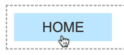
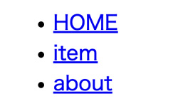
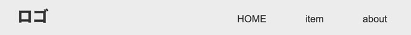

Flexboxでナビゲーション

HTML
- グローバルナビゲーション（header内のナビゲーション）は、必ず nav タグを記述します
- nav内には「ul > li > a」で、リンクを設定します
<nav class="gnav"> <ul> <li><a href="#">HOME</a></li> <li><a href="#">item</a></li> <li><a href="#">about</a></li> </ul> </nav>

画面左右中央に配置
- 幅を指定して左右を auto で設定
- liを中央に配置するには、親要素 ul に「justify-content: center;」を設定
- 隙間を開けるためには、gap を指定しますが今回は指定しません
@charset "UTF-8"; /* ----------------------------------------- reset ----------------------------------------- */ * { margin: 0; padding: 0; box-sizing: border-box; } ul { list-style: none; } a { color: inherit; text-decoration: none; } img { max-width: 100%; vertical-align: bottom; } /* ----------------------------------------- body ----------------------------------------- */ body { background-color: #fff; color: #333; font-style: 16px; font-family: sans-serif; line-height: 1.0; } /* ----------------------------------------- nav ----------------------------------------- */ .gnav > ul { display: flex; justify-content: center; margin: 50px; } .gnav li { font-size: 20px; } .gnav a { display: block; padding: 10px 30px; transition: .5s; /* 0.5秒で挙動 */ } .gnav a:hover { background-color: #bce6ff; }
ボタンの役割にする
- 「display: block;」を記述することにより、a タグがボタンのような面になります
- 「padding」で、面を広げることによりボタンのような使い方ができます
a:hover
- 擬似クラス
- a タグに「:hover」を続けて記述することにより、マススが乗ったときの挙動を設定できます
- 背景色を変更することで、マウスが乗ったときにボタンのように見せることができます
CSS3アニメーション
- a タグに「transition: .3s;」を記述することにより、0.3秒かけて「:hover」の挙動が実行されます
h1 と nav を横並び

HTML
- header の横幅は、ブラウザ幅100%
- 「container」に幅指定をして、ブラウザ幅の中央に配置します
- その中で、 h1 と nav を横並びにします
- ul に幅指定がなくても、親要素「display: flex;」に設定されることにより自動的に左から配置されます（「justify-content: flex-start; 」「flex-direction:row;」が初期値として適用されます）
- 「h1」に「margin-right: auto;」を設定することで「nav」が限度まで右側に移動します
<!-- ▼ header --> <header class="header"> <div class="container"> <h1>ロゴ</h1> <nav class="gnav"> <ul> <li><a href="#">HOME</a></li> <li><a href="#">item</a></li> <li><a href="#">about</a></li> </ul> </nav> </div><!-- /.container --> </header> <!-- ▲ header -->
CSS
@charset "UTF-8"; /* ----------------------------------------- reset ----------------------------------------- */ * { margin: 0; padding: 0; box-sizing: border-box; } ul { list-style: none; } a { color: inherit; text-decoration: none; } img { max-width: 100%; vertical-align: bottom; } /* ----------------------------------------- body ----------------------------------------- */ body { background-color: #fff; color: #333; font-style: 16px; font-family: sans-serif; line-height: 1; } /* ----------------------------------------- header ----------------------------------------- */ .header { background-color: #dcdcdc; } .header > .container { display: flex; align-items: center; max-width: 960px; margin: 0 auto; padding: 20px 0; } .header h1 { margin-right: auto; } /* ----------------------------------------- nav ----------------------------------------- */ .gnav > ul { display: flex; justify-content: center; } .gnav a { display: block; padding: 10px 30px; transition: .5s; } .gnav a:hover { background-color: #fff; }
「display: flex;」で、横並びを設定する
justify-content: space-between; の場合
- ロゴ・ナビゲーションボタンとも幅のある面のため左右に分離されて見える
justify-content: flex-start; の場合
- ロゴとナビゲーションボタンとの空きは、ロゴに「margin-right: auto;」の指定をする
※「margin: auto;」を設定する場合は、ロゴの幅指定が必要になります。
「display: grid;」で、横並びを設定する
- 1fr(fraction: 分数)で、可変を設定
.header > .container { display: grid; grid-template-columns: 1fr auto; align-items: center; width: min(92%, 960px); margin: 0 auto; padding: 20px 0; }